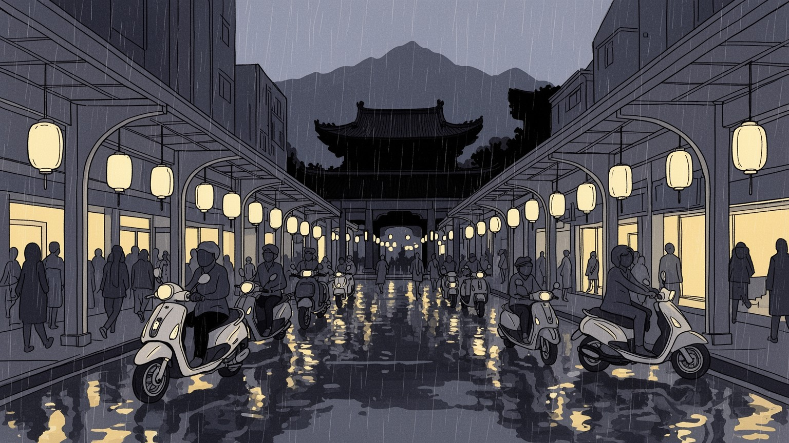
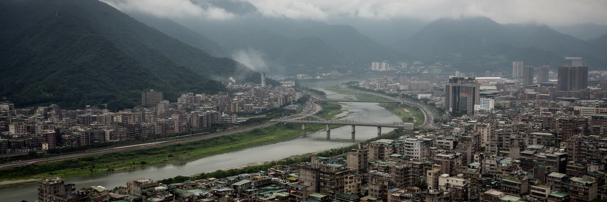
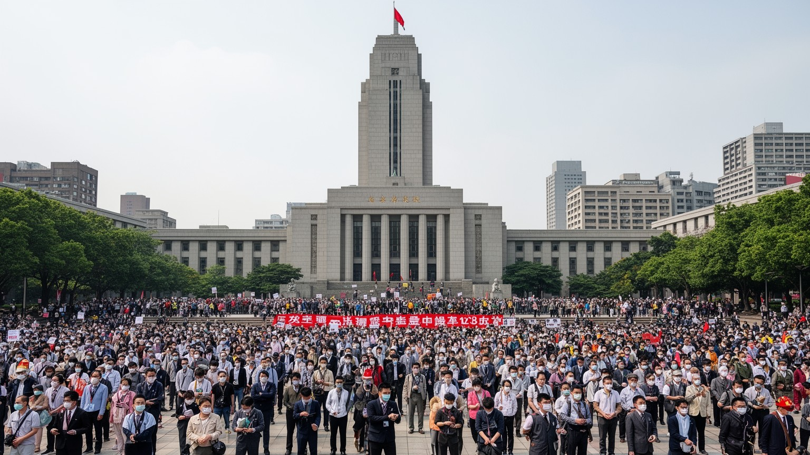
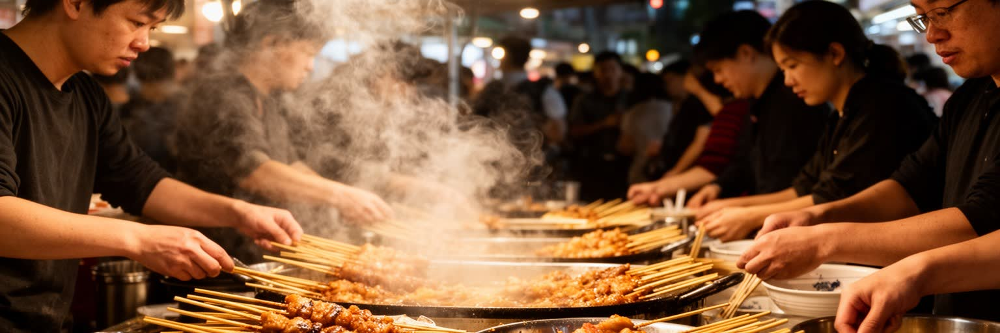
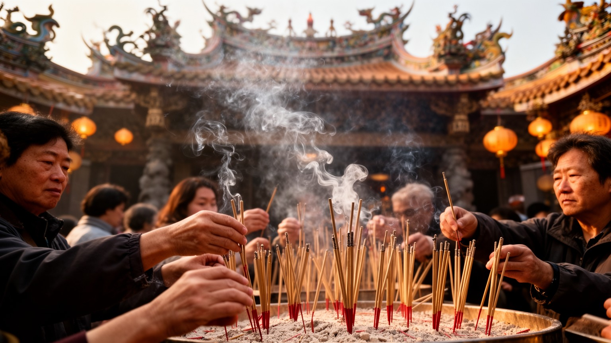
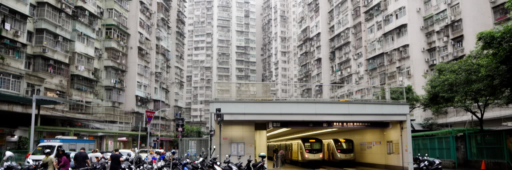
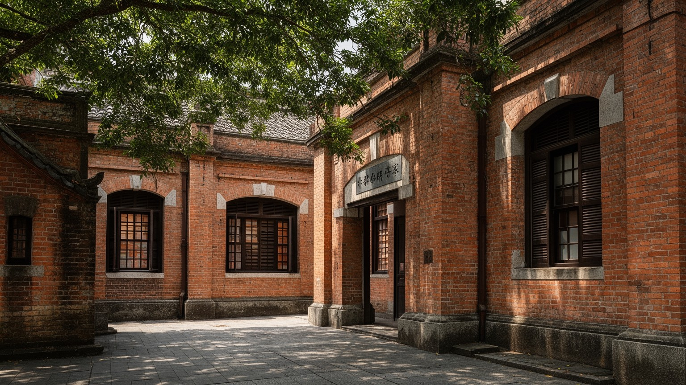
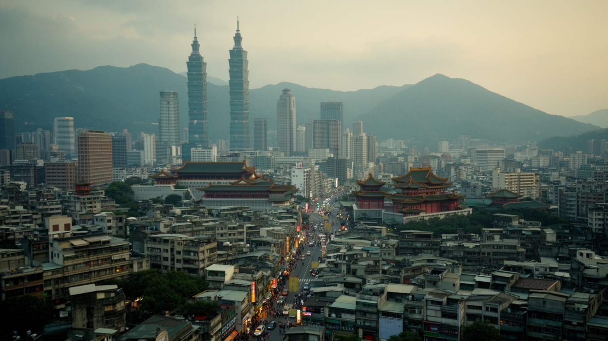
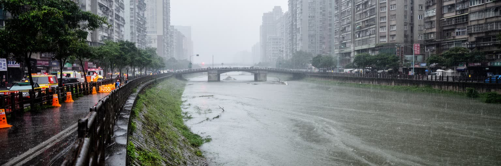
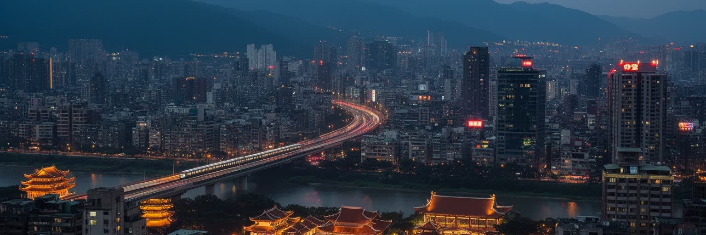

地政学
台北は台湾の政治中枢で、台湾海峡、米中関係、半導体供給網、民主主義の安全保障が日常のニュースと街路に重なります。総統府、立法院、報道機関、集会広場が近く、国際承認の複雑さも都市の緊張に影を落とす要衝です。

🇹🇼 台湾 / 東アジア / World City Atlas
盆地地形、台湾政治、半導体経済、夜市、寺廟、日本統治期の記憶、防災と日常文化が重なる台湾の中心都市です。
都市の骨格
淡水河、新店渓、基隆河、陽明山、中央政府機関、地下鉄網、夜市が、湿った盆地の都市生活を強く結びつけます。

台北は台湾の政治中枢で、台湾海峡、米中関係、半導体供給網、民主主義の安全保障が日常のニュースと街路に重なります。総統府、立法院、報道機関、集会広場が近く、国際承認の複雑さも都市の緊張に影を落とす要衝です。
金融、行政、医療、大学、出版、観光に加え、新竹や桃園の半導体産業を結ぶ管理、研究、投資、人材の結節点です。高学歴職と小商い、配達、介護、飲食の仕事が近く、住宅費と長時間労働が若い世代の選択を左右します。
龍山寺、行天宮、媽祖信仰、仏教、道教、キリスト教、無宗教の生活が重なり、旧正月や中元の祭礼が都市のリズムを作ります。夜市、書店、映画、民主化運動の記憶、音楽の夜の文化も台北の多層性を深めています。
地下鉄、バス、スクーター、朝市、コンビニ、夜市、公園、温泉が暮らしを支え、観光客は台北一〇一、故宮、迪化街、北投を巡ります。便利さの裏で、古い集合住宅、暑さ、豪雨、家賃、少子化が日常の課題になります。

台北は広い平野に拡散した都市ではなく、山に囲まれた盆地の中で成長してきました。北には陽明山と大屯火山群、東には丘陵、西には淡水河、新店渓、基隆河があり、湿気、風、洪水、眺望、交通の方向を地形が細かく決めています。河川沿いの堤防と公園は、日常の散歩道であると同時に、台風や豪雨に備える都市インフラでもあります。盆地の中央には行政、金融、商業、大学、病院が密集し、周辺の新北、基隆、桃園へ生活圏が広がります。地下鉄網はこの複雑な地形を読み替える装置で、淡水、板橋、新店、南港、信義、松山を結び、通勤と観光の距離感を変えました。ですが山と川に囲まれた便利な都市は、土地の不足と住宅価格の高さも抱えます。古い街区、再開発地、高層住宅、河川敷の運動場、山麓の温泉地が近接するため、台北の風景は常に密度と余白の交渉に見えます。盆地の都市を歩くことは、地形が人の移動、住まい、災害リスク、景色の価値をどう分けているかを確かめることです。夕方に山の稜線が近く見え、雨雲が急に市街地へ落ちてくる感覚も、この都市の生活を形づくります。地形は背景ではなく、駅の混雑、川沿いの運動、公園の涼しさ、住宅の値段まで動かす日常の条件です。山へ近いことは休息の近さでもありますが、斜面開発や土砂災害の注意も伴います。自然が近い都市ほど、境界をどう使うかが生活の質を左右します。

台北の中心性は、台湾の行政首都であることから生まれます。総統府、行政院、立法院、司法院、各省庁、政党本部、テレビ局、新聞社、出版社、市民団体が近い距離に集まり、選挙、外交、安全保障、年金、住宅、教育をめぐる議論が街の空気を変えます。台湾は国際的な承認をめぐる複雑な立場に置かれ、台北の政治は常に台湾海峡、米国、中国、日本、東南アジアとの関係を背負います。抗議集会や学生運動が政府地区の道路を占めた歴史は、民主化以後の市民社会と報道文化の厚みを示しています。政治は建物の中だけで完結せず、広場、大学、オンライン空間、寺廟の地域ネットワーク、地域の選挙事務所へ広がります。ニュース番組を流す食堂、出版人が集まる書店、候補者が立つ市場の入口も、制度が生活の言葉に翻訳される場です。民主化を経たメディアは、権力監視だけでなく、災害、スポーツ、芸能、生活情報を家庭の会話へ運びます。家族の食卓にも届きます。安全保障の緊張が高まるほど、都市の地下鉄、空港、通信、病院、避難計画も政治の一部になります。台北を読むには、民主主義がどのような制度、メディア、街路の経験で支えられているかを見る必要があります。政治的な立場が違っても、同じ地下鉄に乗り、同じ市場で買い物をする距離の近さが、台北の公共性を日々試しています。
台北そのものが巨大な半導体工場の街というわけではありません。ですが台湾の半導体経済を動かす資本、人材、法律、金融、研究、設計、政府政策、国際交渉は台北に強く集まります。新竹科学園区、桃園、台中、台南の製造拠点は、台北の本社機能、投資家、大学、行政機関、空港アクセスと結びつき、世界の電子機器とクラウド産業を支える供給網を作ります。台湾大学、政治大学、師範大学などの学生街では、理工系の研究、語学、出版、起業、アルバイトが近く、若い人材の進路が都市の雰囲気を変えます。半導体の成功は台湾の安全保障上の価値を高める一方、電力、水、土地、人材、為替、対中関係、米国や日本との工場分散にも影響されます。高収入の技術職や金融職が増えるほど、住宅価格や教育競争は強まり、飲食、清掃、介護、配送、観光の労働者との距離も広がります。台北の経済を語る時、企業の時価総額や輸出額だけを見れば都市の実感は抜け落ちます。会議室で決まる投資、夜遅くまで開く食堂、通勤する若者、海外から戻る専門職、家族経営の店が同じ経済圏を支えるからです。放課後の補習、大学周辺の安い食堂、書店の棚も、人材育成を日常の側から支えています。奨学金や留学も選択肢です。国際展示会や業界会合には、技術者だけでなく外交官、投資家、調達担当者も集まります。

台北の夜市は観光名所である前に、都市生活の食卓と小商いの場です。士林、饒河街、寧夏、臨江街、南機場などの夜市には、牛肉麺、魯肉飯、胡椒餅、豆花、臭豆腐、果物、衣料、ゲーム、雑貨が並び、仕事帰りの人、学生、子ども連れ、観光客が同じ通路を歩きます。湯気、油の匂い、甘い茶の香り、濡れた路面の湿気、スクーター音が混ざる感覚は、台北の夜を強く記憶させます。朝には伝統市場で野菜、魚、総菜、豆乳、茶葉が売られ、高齢者の買い物と店主の挨拶が地域のリズムを作ります。屋台は台湾の多様な移住史と家庭料理を都市の速度に合わせて再編し、安く早く食べられる日常を支えてきました。茶館でゆっくり飲む烏龍茶、小吃を何皿も分ける食べ方、学校帰りの買い食いは、台北の食を家庭と路上の間に広げています。買い物袋の音も重なります。ですが夜市は自然に残る伝統ではありません。衛生規制、道路利用、騒音、家賃、観光化、後継者不足、配達アプリ、暑さと豪雨への対応が、店ごとの経営を左右します。台北の食文化を読むには、名物料理の味だけでなく、誰が仕込み、誰が深夜に片付け、誰が屋台の権利を管理し、どの地域の高齢者や学生がそこを頼りにしているのかを見る必要があります。外食の多さは便利さであると同時に、家族の時間、台所の小ささ、働き方の長さを映しています。

台北の宗教生活は、龍山寺や行天宮のような有名寺廟だけでなく、路地の小さな廟、祖先祭祀、地域の神明会、家庭の供物、占い、旧暦行事に広がっています。仏教、道教、民間信仰、媽祖信仰、関帝信仰、キリスト教、イスラム教、無宗教の生活が同じ都市に存在し、祈りは観光の対象であると同時に、受験、商売、病気、家族、移住の不安を受け止める実践でもあります。旧暦正月には市場が贈答品と年菜で混み、中元には供物が歩道に並び、媽祖や地域神の巡行では太鼓、爆竹、獅子舞、供花が街路を一時的な祭礼空間に変えます。寺廟は地域の互助、寄付、演劇、食事、老人の居場所、商店街の結束を支えます。子どもが家族に連れられて手を合わせ、高齢者が椅子で休み、店主が開店前に祈る光景は、信仰が世代をつなぐ日常であることを示します。線香の煙や供物の香りは都市の記憶を深めますが、空気環境、騒音、道路利用、防火、観光客のマナーとの調整も必要になります。民主化以後の台湾では、宗教団体が福祉や政治参加に関わる場面も多く、信仰は個人の内面だけに閉じません。台北を歩く時、寺廟の門前に集まる人々を見れば、近代的な高層都市の中にも旧暦の時間と地域の義理が生きていることが分かります。祈りの場は、急速に変わる都市で人々が不安を言葉にし、関係を結び直す場所です。

台北の暮らしは、高密度の集合住宅、古いアパート、再開発ビル、地下鉄、バス、スクーター、徒歩の組み合わせで成り立ちます。中心部では便利な駅近くほど住宅価格が高く、若い世代は親との同居、郊外への移住、長いローン、賃貸の不安定さを考えざるを得ません。新北や桃園からの通勤は都市圏を広げ、地下鉄の延伸は生活範囲を変えましたが、駅からの距離や乗換は毎日の時間を削ります。スクーターは細い道と短距離移動に強く、朝の送り迎え、飲食店、配達、通勤、買い物を支える一方、排気、駐車、事故、歩行者空間の狭さを生みます。雨上がりの路地ではエンジン音、湿った壁、揚げ物と排水の匂いが近く、都市の便利さは感覚としても濃く迫ります。古い住宅の多くはエレベーターや断熱、耐震、防火に課題を抱え、高齢化が進むほど住まいのバリアフリーは切実になります。保育園、学校、公園、診療所、市場が近いことは子どもと高齢者の生活を支えますが、その近さは土地の高騰と表裏一体です。朝市の買い物、放課後の塾、夜のコンビニ、路上の修理店も、家の外へ広がる生活の部屋です。住みやすい都市であり続けるには、住宅供給、家賃支援、歩道の安全、老朽建物の改修を一緒に考える必要があります。移動の速さだけでなく、弱い立場の人が同じ街を使えるかが、台北の生活の質を決めます。

台北の街には、日本統治期に整えられた道路、官庁、学校、鉄道、上下水道、公園、病院、住宅地の痕跡が残っています。総統府として使われる旧台湾総督府、台北賓館、台大病院、旧駅周辺、温泉地の北投、赤レンガや木造家屋の保存地区は、近代都市建設と植民地支配が切り離せないことを示します。日本語世代の記憶、戦後の国民党政権による再編、二二八事件、戒厳令、民主化は、都市の歴史の読み方を複雑にしています。日本統治期の建物は美しい観光資源として紹介されることが多いが、その背後には支配、同化、教育、警察、インフラ、戦争動員の経験があります。台北の日本語の痕跡を懐かしさだけで読むと、植民地の不平等を見落とします。逆に、すべてを過去の抑圧として片付けるだけでも、住民がその建物を戦後どのように使い直し、台湾社会の記憶へ組み込んできたかは見えません。保存された建築、旧町名、温泉文化、鉄道駅、学校の敷地は、台湾人、日本人、外省人、先住民の歴史が交差する場所です。台北を理解するには、都市の近代化が誰の権力で進み、現在の市民がそれをどう読み替えているのかを丁寧に追う必要があります。古い建物の再利用は、過去を美化するためではなく、複数の記憶を公共空間で議論する入口になります。観光客に親しみやすい日本語の断片も、支配された側の経験と一緒に読まれて初めて、都市史としての厚みを持ちます。

台北観光は、台北一〇一、国立故宮博物院、中正紀念堂、龍山寺、迪化街、華山、松山文創園区、北投温泉、猫空、淡水、夜市を結ぶことで、近代国家、商業、宗教、山水、食を短い時間で体験できます。故宮は中国歴代の美術品を収蔵する巨大な文化施設であると同時に、戦後の政治と文化の移動を物語る場所でもあります。信義では台北一〇一と百貨店、地下街、映画館が買い物の中心を作り、古い迪化街では漢方、乾物、布、茶、再生されたカフェが保存と商業化のバランスを問いかけます。台北ドームや体育館では野球、バスケット、コンサートが大きな人の流れを生み、試合後の食事や交通混雑も都市経験の一部になります。夜になると西門町や公館、松山周辺でKTV、ライブハウス、インディ音楽、学生の集まりが続き、観光の時間は昼の名所から夜の文化へ移ります。中正紀念堂は観光地でありながら、権威主義時代の記憶をどう扱うかという政治的な広場でもあります。雨を避けるアーケード、温泉へ向かう支線、山上から見る夜景は、観光と日常の距離を近づけます。台北の名所を歩く時には、写真映えする景観だけでなく、その場所がどの時代の権力、信仰、商売、記憶を背負っているのかを読むと、旅はより立体的になります。短期滞在でも、朝の市場と夕方の寺廟を歩けば、観光都市の表情が生活の時間に支えられていることが分かります。

台北は便利な都市であると同時に、台風、豪雨、地震、猛暑に備えなければならない都市です。盆地の地形は雨水を集めやすく、淡水河、新店渓、基隆河の水位は台風時の緊張を高めます。河川敷の公園や自転車道は日常の余暇空間ですが、増水時には水を逃がす場所として設計されています。地震については、古い住宅、軟弱地盤、高層ビル、地下鉄、橋、病院、学校の耐震性が問われます。台北一〇一のような象徴的建築は防災技術を示すが、都市全体の安全は目立つビルだけでは決まりません。老朽アパートに住む高齢者、外国人労働者、低所得世帯、夜市の屋台、地下街の利用者、山麓の住宅が、災害時にどれだけ情報と支援を受けられるかが重要です。猛暑と湿気は日常の健康にも影響し、屋外労働者や配達員には負担が大きいです。防災は行政の計画だけでなく、地域の連絡網、学校教育、避難訓練、保険、建物改修、雨の日の交通運用に現れます。台北の都市力は、危険を完全に消すことではなく、自然条件を理解し、弱い立場の人ほど早く守れる仕組みを作ることにあります。災害が起きない平常時にも、排水溝の清掃、建物診断、避難所の案内、多言語の通知は続きます。日常の管理が見えにくいほど、非常時の安心を支えています。停電や断水に備える家庭の習慣、学校の訓練、地域の連絡網も、都市の防災力を静かに底上げしています。

台北を読むには、台北一〇一や夜市だけでなく、盆地地形、台湾政治、半導体経済、寺廟、住宅、スクーター、地下鉄、日本統治期の記憶、台風と地震への備えを同じ地図に置く必要があります。世界のサプライチェーンを支える台湾経済はこの都市に金融、行政、研究、人材を集めますが、その成功は住宅価格、教育競争、長時間労働、世代間格差も強めます。民主政治の中心である台北では、国際的な安全保障の緊張が遠い外交問題ではなく、選挙、テレビ討論、出版、避難訓練、企業投資、若者の進路に影響します。寺廟の祈り、夜市の食卓、河川敷の運動、古い市場、書店、温泉、文創施設、KTV、野球やバスケットの応援は、硬い政治と経済の数字だけでは見えない市民の時間を支えます。台北の魅力は、密度の高い都市でありながら山と水辺にすぐ触れられ、伝統的な儀礼と先端産業が近い距離で共存する点にあります。課題は、その便利さと豊かさを誰が享受できるのかです。家賃、老朽住宅、少子化、災害、国際的な圧力に向き合いながら、台北は日常の柔らかさと政治的な緊張を同時に抱えます。茶の香り、朝市の声、夜の音楽も含めて見ると、市民の時間はさらに厚みを持ちます。小さな食堂、投票所、研究室、寺廟の香炉、雨のバス停、湿った路地の匂いを同じ都市の部品として見ると、台北は生活の工夫を積み重ねる市民の都市として立ち上がります。